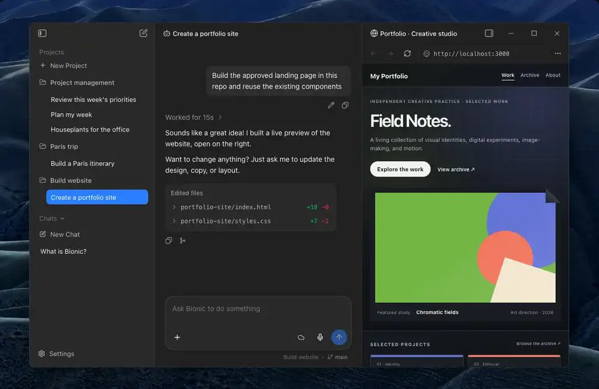
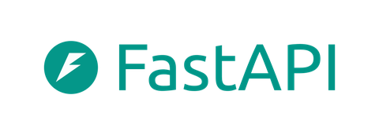
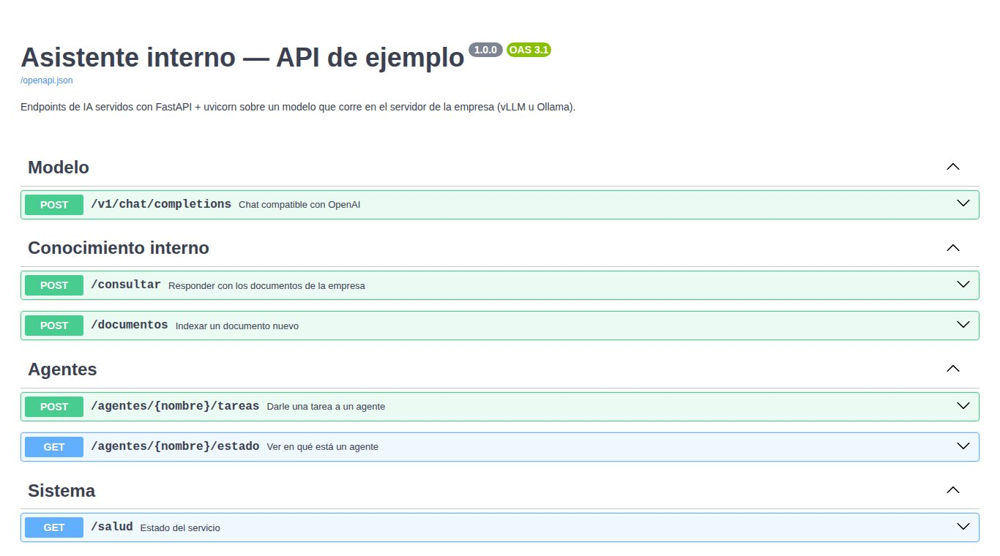

Inteligencia artificial que trabaja para tu organización.
Diseñamos e implementamos sistemas de IA a medida para empresas públicas y privadas de Uruguay, y para personas: agentes que trabajan solos, modelos que corren en tus propios servidores, APIs de IA para tus sistemas y asistentes que conocen tus documentos sin sacarlos de tu red.
Cuéntanos tu ideaVer qué hacemosCuatro formas de poner la IA a trabajar.
Cada proyecto es distinto, pero casi todos combinan estas cuatro piezas. Las armamos con herramientas abiertas y probadas, para que el sistema sea tuyo y no dependa de un solo proveedor.
Agentes y harnesses
Asistentes que hacen tareas solos, con memoria, horarios y reglas, y te piden permiso para lo delicado.
02Modelos en tu servidor
Modelos de lenguaje abiertos corriendo en tu infraestructura con vLLM, Ollama o LM Studio.
03Endpoints de IA
Tu propia API de IA con FastAPI y uvicorn, lista para que la usen tus sistemas y tu equipo.
04IA con tus datos
Respuestas y búsquedas sobre documentos, planillas y sistemas internos, citando la fuente.
Un asistente que no espera a que le pregunten.
Un modelo de IA por sí solo responde preguntas. Un harness es todo lo que lo rodea para que trabaje solo y de forma confiable: lo que recuerda, cuándo actúa, qué herramientas puede usar y qué tiene prohibido.
- Memoria: recuerda decisiones, preferencias y errores, y aprende de ellos.
- Horarios: revisa el correo, arma un resumen a primera hora o controla un sistema cada 15 minutos.
- Herramientas: lee y escribe en tus sistemas, planillas, calendario o mensajería.
- Control humano: lo delicado (borrar, pagar, mandar algo afuera) pasa por tu aprobación, y todo queda registrado.
Así funciona Friday, nuestro propio asistente, que trabaja de día y de noche desde hace meses.
Tu IA, en tu red. Sin pagar por cada consulta.
Hoy existen modelos de lenguaje abiertos de muy buena calidad que se pueden instalar en un servidor propio o en una nube que elijas. Los documentos y las conversaciones no pasan por terceros, el costo es fijo y nadie te cambia el modelo de un día para otro.
- vLLM: para producción, con muchos usuarios a la vez y máximo rendimiento en GPU.
- Ollama: la forma más simple de servir un modelo, ideal para equipos chicos y prototipos.
- LM Studio: una aplicación de escritorio para probar y comparar modelos en tu propia computadora.
Te ayudamos a elegir el modelo y el hardware según lo que necesitas, y lo dejamos funcionando.



Tu propia API de IA, para todos tus sistemas.
Para que tus aplicaciones, tu web o tu equipo usen la IA, hace falta una puerta de entrada ordenada: una API. La construimos con FastAPI y la servimos con uvicorn, dos herramientas abiertas y muy usadas en Python.
- Compatible con OpenAI: lo que hoy usa la API de OpenAI puede pasar a tu modelo cambiando una dirección.
- Con llave: cada sistema o persona tiene su acceso, y se puede cortar en cualquier momento.
- Documentada sola: cada endpoint queda descrito y se puede probar desde el navegador.
- Con registro: qué se consultó, cuándo y cuánto se usó.


Un asistente que conoce tu organización.
Manuales, procedimientos, expedientes, contratos, planillas, tickets o tu archivo personal: los conectamos a un asistente que responde preguntas, resume y redacta usando esa información, y siempre te dice de dónde sacó cada dato.
- Búsqueda por significado: encuentra la respuesta aunque no uses las mismas palabras que el documento (RAG).
- Permisos: cada persona ve solo lo que su área puede ver.
- Siempre al día: cuando cambia un documento, el asistente lo sabe.
- Datos en casa: todo puede quedar dentro de tu red y en Uruguay.
Para organismos, empresas y personas de Uruguay.
Trabajamos desde Montevideo con organizaciones de cualquier tamaño, del sector público y del privado.
Sector público
Organismos, entes y empresas públicas.
- Atención a la ciudadanía y consultas frecuentes.
- Búsqueda en normativa, resoluciones y expedientes.
- Sistemas dentro de la red del organismo, con los datos en Uruguay.
Empresas privadas
De la pyme a la gran empresa.
- Agentes para soporte, ventas y tareas administrativas.
- Asistentes internos con los procedimientos de la empresa.
- APIs de IA para sumar a los sistemas que ya tienes.
Personas y profesionales
Para tu trabajo o tu día a día.
- Un asistente personal como Friday, a tu medida.
- Tu archivo, tus notas y tu correo, ordenados por IA.
- Modelos corriendo en tu propia computadora.
De la idea a un sistema funcionando.
Charla
Nos cuentas la idea y qué problema quieres resolver. Sin costo.
Propuesta
Te decimos qué haríamos, con qué herramientas, en cuánto tiempo y a qué costo.
Prototipo
Una primera versión funcionando con tus datos reales, para probar rápido.
Puesta en marcha
Lo dejamos instalado, documentado y con acompañamiento.
Lo que suelen preguntarnos.
¿Qué es un harness de agentes?
Es todo lo que rodea a un modelo de IA para que trabaje solo y de forma confiable: memoria, tareas programadas, acceso a herramientas, reglas, registro de lo que hizo y pedidos de aprobación para lo delicado.
¿Mis datos salen de la empresa?
No tienen por qué. Podemos correr el modelo en tus propios servidores, o en una nube que elijas, para que los documentos y las conversaciones no pasen por terceros.
¿Trabajan con organismos públicos?
Sí. Trabajamos con empresas públicas y privadas de Uruguay y con personas. Los sistemas se pueden instalar dentro de la red del organismo, con los datos en Uruguay.
¿Necesito comprar hardware especial?
No siempre. Muchos proyectos funcionan con modelos en la nube o con un servidor modesto. Si conviene un servidor con GPU, te ayudamos a elegirlo según el uso.
¿Cuánto cuesta?
Depende del alcance. La primera charla es sin costo: nos cuentas la idea y te decimos qué haríamos, en cuánto tiempo y con qué presupuesto.